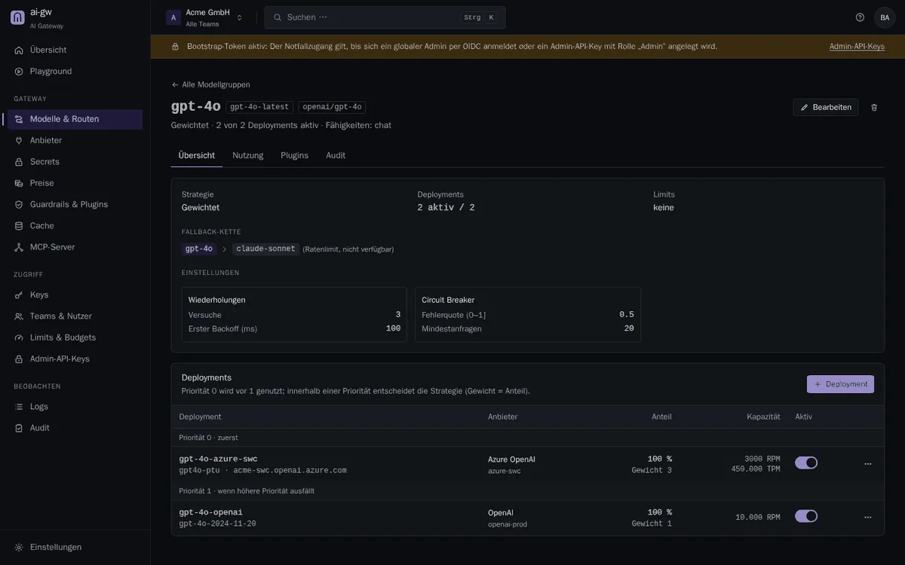
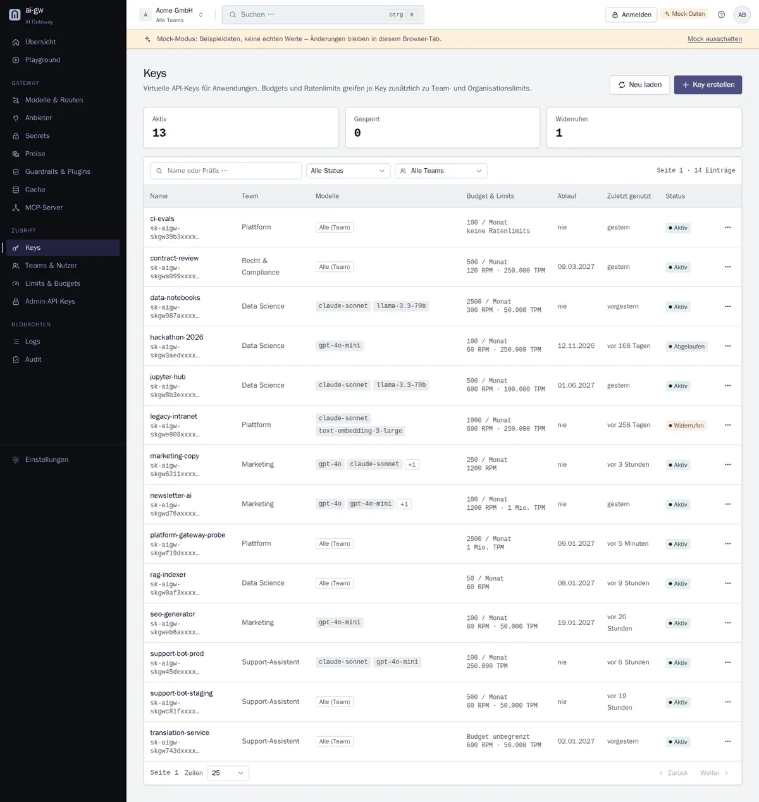
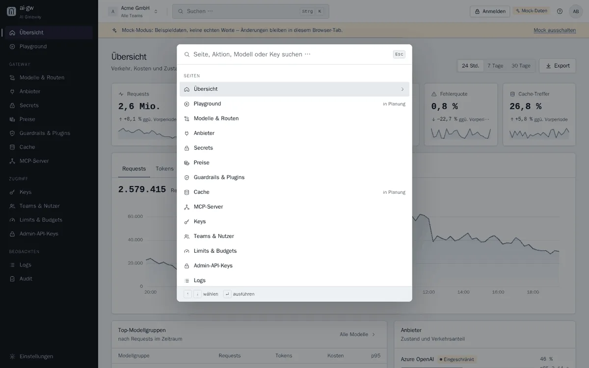

Die Admin-UI ist eine Svelte-5-Anwendung, die fest in das Binary eingebettet ist und von der Steuerebene (Standard-Port 4001, Pfad /admin/) ausgeliefert wird. Sie nutzt ausschließlich die öffentliche Admin-API – alles, was hier zu sehen ist, geht auch per API oder als YAML. Die Aufnahmen stammen aus der echten Oberfläche; Organisationen, Teams, Keys und Zahlen sind fiktive Beispiel- oder Testdaten.
Vorabversion – die Oberfläche kann sich ändern. Die Aufnahmen zeigen den Entwicklungsstand vom November 2026. Die Oberfläche ist derzeit deutschsprachig.
Übersicht#
Requests, Tokens, Kosten, p95-Latenz, Fehlerquote und Cache-Treffer im gewählten Zeitraum, darunter Verlauf, Top-Modellgruppen, Verkehrsanteil und Zustand der Anbieter sowie die letzten Fehler.

Modellgruppen und Routing#
Eine Modellgruppe ist der öffentliche Modellname für die Clients. Dahinter stehen Deployments mit Priorität, Gewicht und Kapazität; Fallback-Kette, Wiederholungen und Circuit Breaker sind je Gruppe einstellbar.


Keys#
Virtuelle API-Keys für Anwendungen, mit Team, freigegebenen Modellen, Budget, Ratenlimits, Ablauf und Status. Der Klartext wird nur beim Anlegen einmal angezeigt.

Log-Explorer#
Alle Requests über das Gateway – mit Modell, Anbieter, Key, Tokens, Kosten, Latenz, Cache-Treffern und Fallback-Versuchen. Inhalte werden nur gespeichert, wenn es konfiguriert ist, und dann maskiert.

Guardrail-Profile#
Profile bündeln empfohlene Guardrail-Einstellungen. Vor dem Anwenden auf eine Organisation, ein Team, einen Key oder eine Modellgruppe zeigt die UI, welche Plugin-Bindungen entstehen oder sich ändern.

YAML-Import und Audit#
Konfiguration lässt sich als YAML-Manifeste exportieren und wieder anwenden – erst als Trockenlauf mit Diff, dann in einer Transaktion. Jede Änderung landet im Audit-Log, dessen Hash-Kette sich in der UI prüfen lässt.


Befehlspalette#
Mit Strg+K springt man zu Seiten, Aktionen, Modellen oder Keys – ohne die Hand von der Tastatur zu nehmen.
